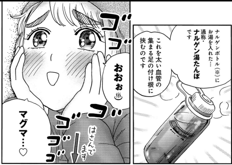
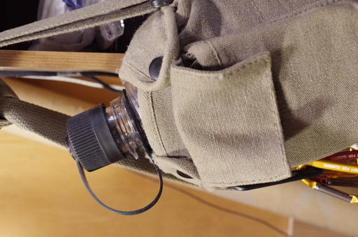
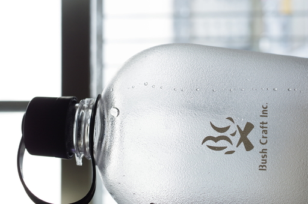

今日は大寒である。気象庁の発表によると今日から数日はこの冬最強の寒波が日本列島に押し寄せるらしく、今年は間違いなく寒いようだ。
なのであわてて暖を取る方法を考えてみた、と言いたいところだが、実はそういうわけではなく、昔から山屋の間では非常時に nalgene ボトルにお湯を入れて暖を取るハックがあり、それが実際にどれくらいの効果があるのか自分の体でそれを試してみたくなってしまった。
このハックは人気マンガ山と食欲と私の８巻でも登場する。自分の場合は野外で暖をとるのではなくあくまで布団の中を快適にしたいだけなのだけど。

自分は nalgene のボトルは薬品保存用の小さなものを除けば 500ml、650ml、1000ml のボトルを所有している。だが自分の場合、 nalgene ボトルは日常的な普段使いには使用しておらず、取り出すにはちょっと面倒なところにしまい込んでいる。
なので nalgene の代わりになるものを考えてみた。ペットボトルが手軽ですぐに思い浮かぶが調べてみたところ熱湯を入れると縮んだり変形したりしてだめらしい。
しばらく何かが代わりにならないかと考えたが、ふとすぐ横のカラーボックスに Bush Craft Inc. のブッシュキャンティーンボトルを下げていることに思い当たった。

このブッシュキャンティーンボトルは、nalgene オアシス Tritan とほぼ同じスペックなので、水漏れさえなければこのボトルでも湯たんぽ代わりに使えそうだと考えた。
水漏れしないことを確認してから早速熱湯を容器の口ギリギリまで入れて、タオルを巻いてさらに 100 均で購入したフリース帽に入れて布団に放り込んでみた。
朝起きたらキャンティーンボトルの中身がでて布団がびしょ濡れに……となったら話としては面白いのだろうがそうはならなかった。一晩中布団の中は暖かく熟睡できた。またきちんと湯温を計ったわけではないが、今朝起きた時点でまだ風呂より若干温度が高い感じでまだ充分に温かかった。

ブッシュキャンティーンボトルも非常時は湯たんぽとして使うことができなくはない。それが結論となる。
実はこの実験、メインとなる目論見が別にあって「実際のところ湯たんぽって体感的にどうなのよ？」というのをお金をかけずに知りたかったのだ。
この人体実験のおかげて湯たんぽを買う決心がついた。だって湯たんぽも安くはないので。